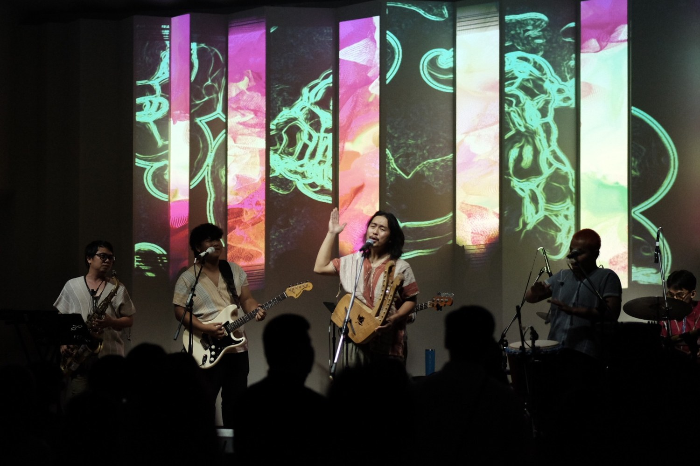
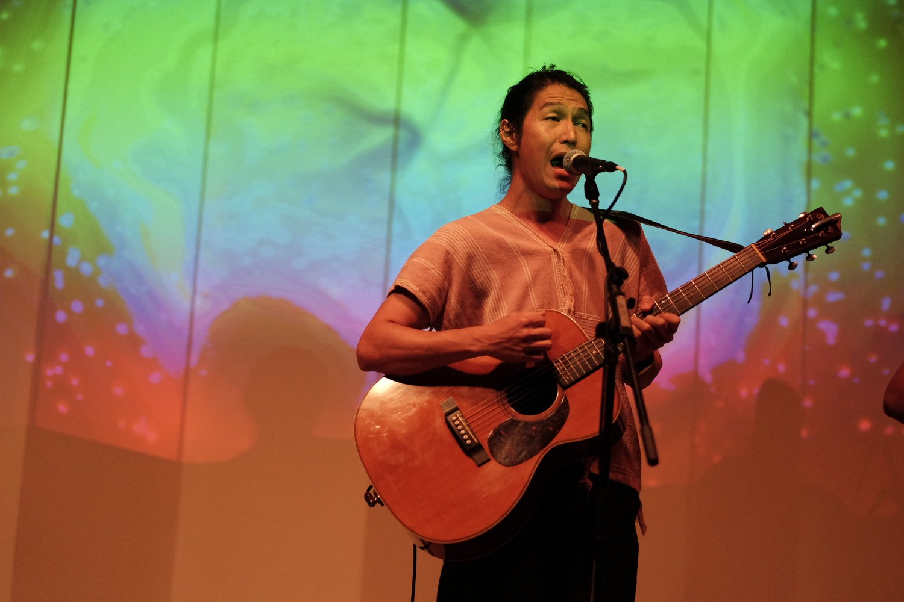
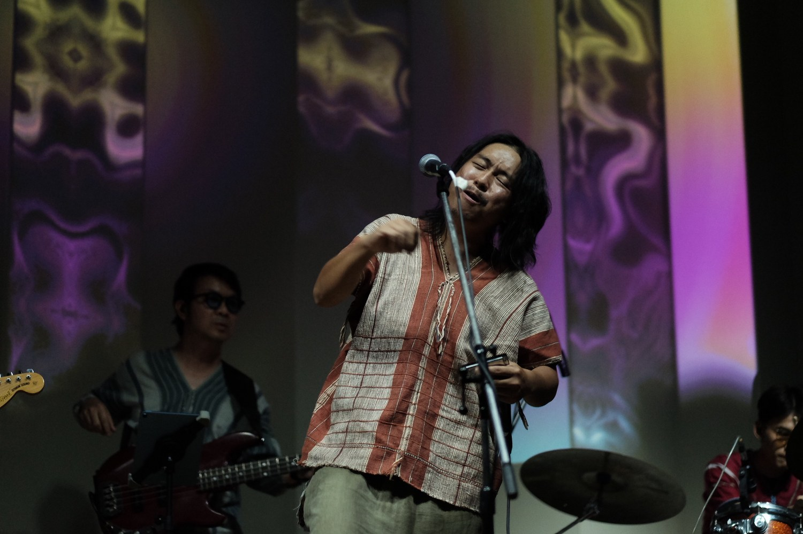
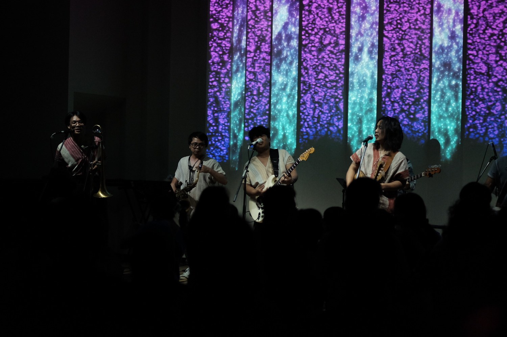

Live generative visuals for the concert Tales of Musekee (เสน่ห์มูเส่คี) at the auditorium of Goethe-Institut Thailand, 9 February 2024. Visuals were generated and played live behind the performing musicians — Klee Bho, View from the Bus Tour and Aboy — across a full-wall projection and a set of vertical hanging panels. Organised by Goethe-Institut Thailand with Thepoe Buntuek.
Artists: Klee Bho, View from the Bus Tour, Aboy · Presented by Goethe-Institut Thailand & Thepoe Buntuek · Visuals: Weeratouch Pongruengkiat



